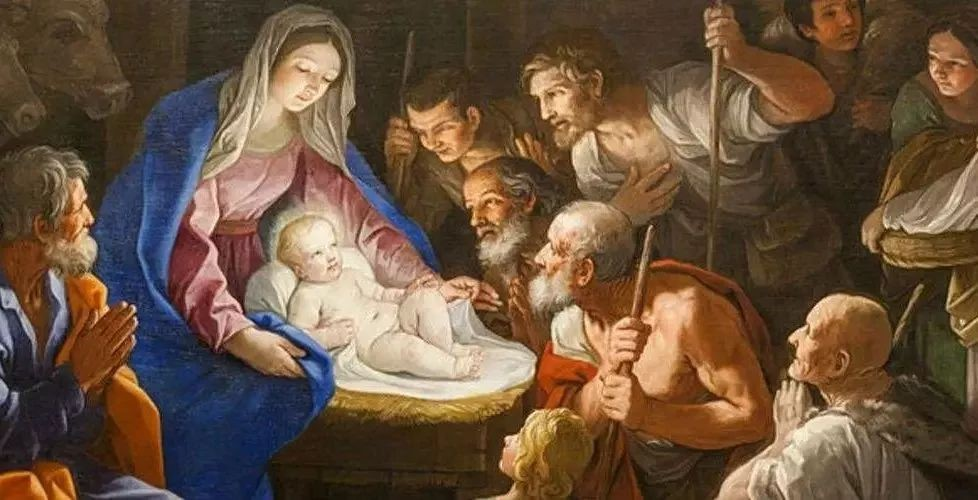

不知不觉又到了一年之中的12月，明天圣诞节就要到来了，圣诞节是西方世界一年 一度最重要的节日！那么，你知道圣诞节的由来吗？你又知道圣诞节的习俗文化有哪些 吗？搬起小板凳，来听听圣诞节的那些事儿吧！
据说耶稣是因着圣灵成孕，由童女马利亚所生的。神派遣使者加伯列在梦中晓谕约 瑟，把那孩子起名为“耶稣”，意思是要他把百姓从罪恶中救出来。后来马利亚在马槽 上，生下耶稣。后人为纪念耶稣的诞生，便定十二月二十五为圣诞节，纪念耶稣的出 世。
十九世纪初发展至中叶，整个欧洲、美洲开始过起了圣诞节。并衍生出了相应的圣 诞文化。圣诞节传播到亚洲是在十九世纪中叶，日本、韩国、中国等都受到了圣诞文 化的影响。吃苹果、带圣诞帽、寄送圣诞贺卡，参加圣诞派对，圣诞购物等成了中国 人生活的一部分。
圣诞老人(Santa Claus)别称Saint Nick、Kris Kringle、Father Christmas 或Santa(爱尔兰英语的Santy)，一位专门在圣诞节前夜时悄悄赠送礼物给小孩子的神 秘人物，是节日主题的代表角色之一。
那是一顶红色帽子，据说晚上戴上睡觉除了睡得安稳和有点暖外，第二天你还会发 现在帽子里多了点心爱的人送的礼物。在狂欢夜它更是全场的主角，无论你去到哪个 角落，都会看到各式各样的红帽子，有的还有帽尖发亮的，有的是金光闪闪的。
据说有一位农民在一个风雪交加的圣诞夜里接待了一个饥寒交迫的小孩，让他吃了 一顿丰盛的圣诞晚餐，这个孩子告别时折了一根杉树枝插在地上并祝福说：“年年此日 ，礼物满枝，留此美丽的杉树，报答你的好意。”小孩走后，农民发现那树枝竟变成了 一棵小树，他才明白自己接待的原来是一位上帝的使者。这个故事就成为圣诞树的来 源。
圣诞袜是小朋友最喜欢的东西，晚上他们会将自己的袜子挂在床边，等待第二天早 上收礼。而现在一般是他们的爸爸妈妈或亲人给他们送礼物。
西方国家圣诞节其间挂在家门口用的装饰品，通常用绿色的枝叶或藤条(松毛、松 针等)和银色的金属及金色的铃铛配以红色的缎带组成主色调绿、白、黄、红代表欢乐 喜庆上面写着MERRY CHRISTMAS或者简写为X'mas。圣诞节环最早出现在芬兰 (Finland)
是祝贺圣诞及新年的贺卡，上面印着关于耶稣降生故事的图画，以及“庆祝圣诞、 新年快乐之类的祝愿的话。
更多内容可以百度一下